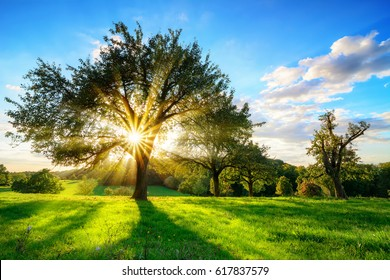

Adopt the pace of nature:her secret is paintence. Raplph Waldo Emerson

Nature is pleased with simplicity. And Nature is no dummy. Isaac Newton
By discovering nature, you discover yourself. Maxime Lagace
Going to the mountains is going home. John Muir
Adopt the pace of nature:her secret is paintence. Raplph Waldo Emerson
Nature is pleased with simplicity. And Nature is no dummy. Isaac Newton